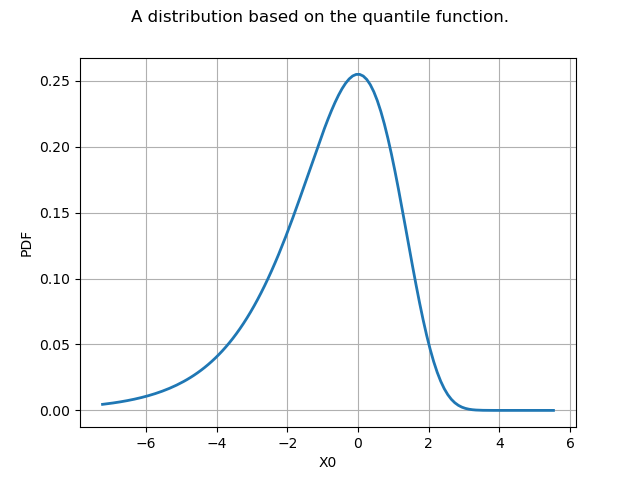

Note
Go to the end to download the full example code
Create your own distribution given its quantile function¶
We want to create a distribution with CDF  from the quantile function
from the quantile function  .
In order to implement this, we use the
.
In order to implement this, we use the CompositeDistribution class.
We know that the random variable  is distributed according to
if and only if
is distributed according to
if and only if  is distributed according to the uniform
distribution in the
is distributed according to the uniform
distribution in the ![[0,1]]() interval, i.e.
interval, i.e. ![U=F(X) \sim \mathcal{U}(0,1)]() .
Hence, if
.
Hence, if  then
then  is distributed according to .
is distributed according to .
In this example, we want to create a distribution with CDF ![F: \mathbb{R} \rightarrow [0,1] `parametrized by :math:]() rho > 1`:
rho > 1`:
![F(x) = 1-e^{-\rho^x} \quad \forall x \in \mathbb{R}.]()
The quantile function is ![F^{-1} : u \rightarrow [0,1]]() and writes:
and writes:
![F^{-1}(u) = \dfrac{\log \left[ - \log (1-u) \right] }{\log(\rho)} \quad \forall u \in [0,1]]()
Since , then  .
This is why we can simplify the expression and define the function
.
This is why we can simplify the expression and define the function  such as:
such as:
![G(u) = \dfrac{\log \left[ - \log u \right] }{\log(\rho)} \quad \forall u \in [0,1].]()
Then  is distributed according to the distribution.
is distributed according to the distribution.
First, we import the useful libraries and we create the symbolic function .
import openturns as ot
from openturns.viewer import View
Then, we create the function with  .
To do this, we create a function which takes both
.
To do this, we create a function which takes both  and
and  as inputs and returns
as inputs and returns  .
Then the g function is defined as a
.
Then the g function is defined as a ParametricFunction with a fixed value of .
gWithParameter = ot.SymbolicFunction(["u", "rho"], ["log(-log(u)) / log(rho)"])
rho = 2.0
g = ot.ParametricFunction(gWithParameter, [1], [rho])
We define the distribution distF as the image through of the Uniform(0,1) distribution:
distF = ot.CompositeDistribution(g, ot.Uniform(0.0, 1.0))
Now, we can draw its pdf, cdf, sample it,…
g = distF.drawPDF()
g.setTitle("A distribution based on the quantile function.")
g.setLegendPosition("")
view = View(g)
view.ShowAll()
